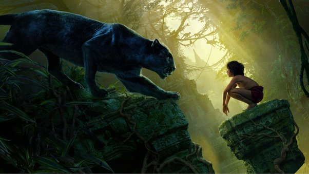

Bagheera is presented as a wise figure. Level-headed and intelligent,
the panther is amongst the most down-to-earth residents of the jungle.
When first introduced, he is seen as a selfless and caring individual,
rescuing the orphaned Mowgli, and going out of his way to ensure his safety
from that moment forward.